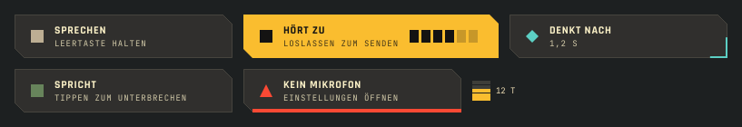
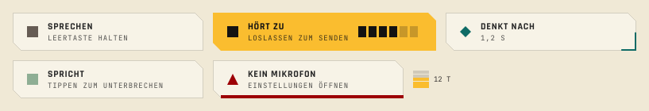
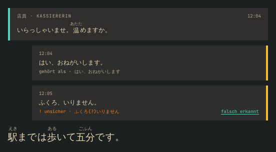
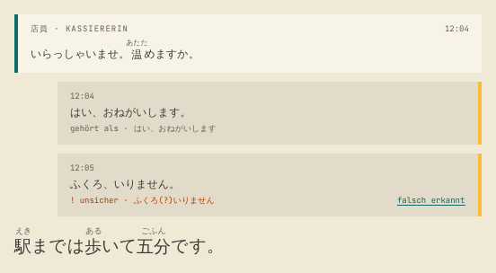
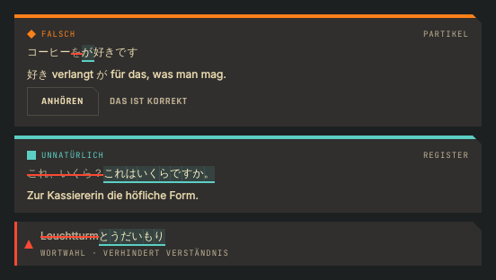
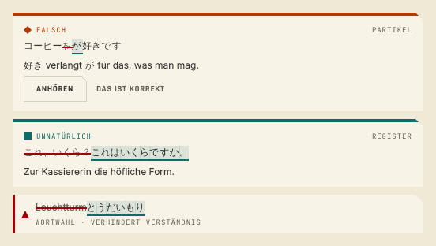
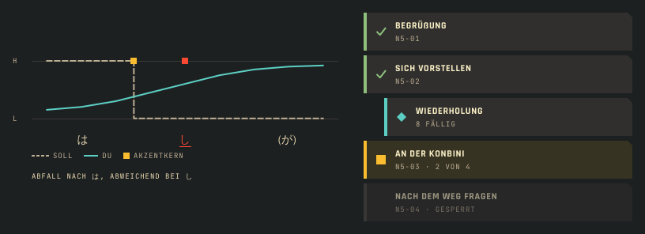
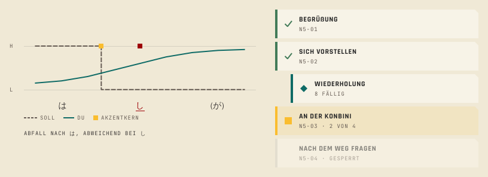

Kante 1.25
The conversation components for Kaiwa as built in QML, in Kante (dark) and Kante Light (Leinen), rendered offscreen with Qt 6.8 and Kirigami 6.10. The sketches and decisions D-1 to D-7 are in index.html; the web classes are in components.css under "Kante 1.25".
Talk button and goal meter


Conversation with furigana and heard line


Corrections


Pitch curve and learning path

